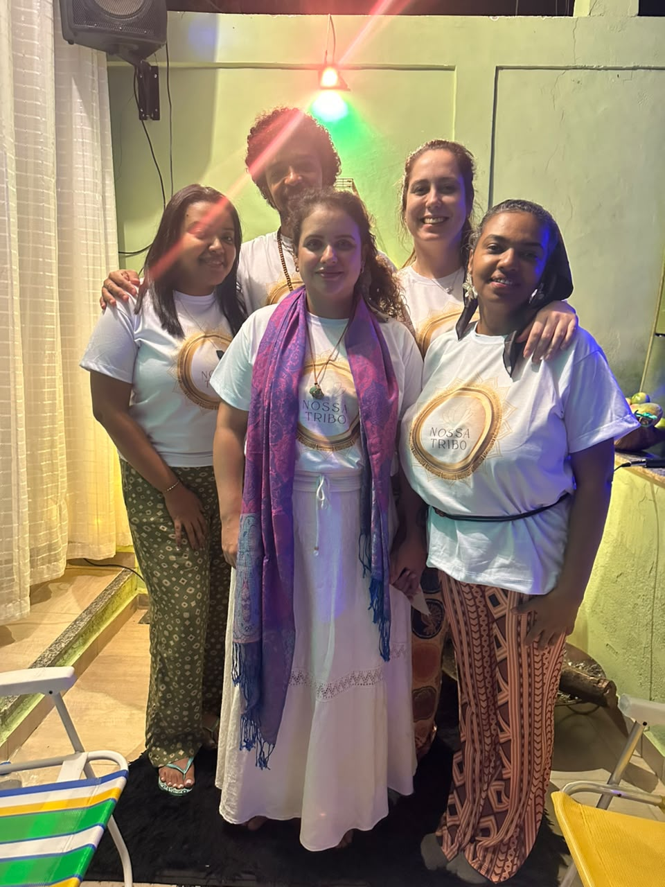
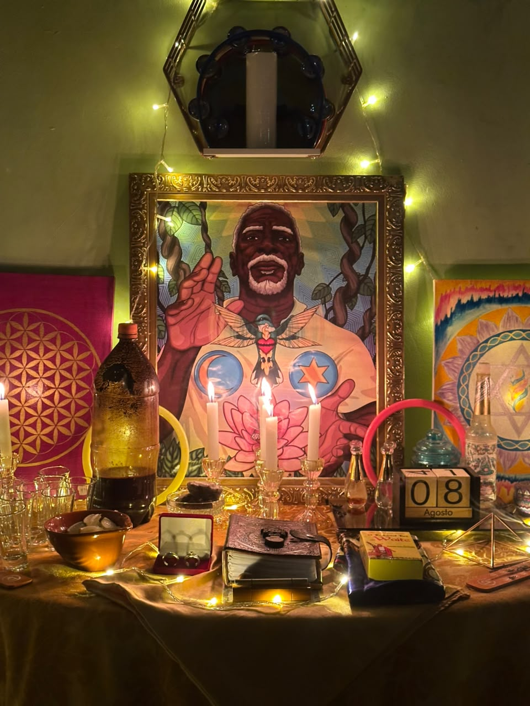

Desperte sua Consciência e Encontre sua Cura Interior
Venha vivenciar a sagrada medicina da floresta em um ambiente de luz, respeito, acolhimento e muito amor. Sinta o chamado.
Venha vivenciar a sagrada medicina da floresta em um ambiente de luz, respeito, acolhimento e muito amor. Sinta o chamado.

A Nossa Tribo nasceu do chamado ancestral para ancorar a luz e o amor através das medicinas da floresta. Somos uma família espiritual dedicada ao despertar da consciência, cura emocional e evolução do ser.
Nossas cerimônias são conduzidas com extrema responsabilidade, respeito às tradições xamânicas e profundo cuidado com cada participante, garantindo um espaço seguro para sua jornada interior.

A Ayahuasca (também conhecida como Nixi Pae, Daime ou Vegetal) é um chá sacramental de origem amazônica, feito da união do cipó Mariri (Jagube) e das folhas da Chacrona (Rainha).
Considerada uma "medicina da alma", ela atua como um expansor de consciência, permitindo acessar memórias profundas, ressignificar traumas, curar feridas emocionais e proporcionar um encontro verdadeiro com sua essência divina.
"A medicina não te mostra o que você quer ver, ela te mostra o que você precisa curar para ser livre."
Para receber a medicina com reverência e facilitar o processo de limpeza (física e espiritual), pedimos que realize a dieta nos 3 dias que antecedem o ritual.
Evite carne vermelha e de porco. Dê preferência a alimentos leves, frutas, legumes, grãos e muita água. Evite excesso de sal, açúcar, frituras e temperos fortes.
É rigorosamente proibido o uso de bebidas alcoólicas, drogas ilícitas (maconha, cocaína, sintéticos, etc.) e medicações contra-indicadas.
Mantenha abstinência sexual (incluindo masturbação) para preservar sua energia vital. Busque repousar a mente, evite discussões e conteúdos pesados na TV/internet.
"A experiência com a Nossa Tribo transformou minha visão de mundo. Encontrei respostas que buscava há anos na terapia tradicional. O cuidado dos guardiões durante toda a consagração me fez sentir em casa e segura para mergulhar nas minhas sombras."
"Um espaço de muito respeito e amor. A música (os rezos) são lindos e conduzem a jornada de forma espetacular. Saí de lá com o coração leve e uma clareza mental que nunca havia experimentado."
"Foi a minha primeira consagração e eu estava muito nervosa. A paciência da equipe e o ambiente super acolhedor me acalmaram na hora. O chá me trouxe uma paz imensa e a certeza de que somos todos um. Gratidão eterna à egrégora!"
Sinta o chamado e entre em contato para agendar sua participação na próxima cerimônia.
Duque de Caxias, Rio de Janeiro - RJ
(Endereço completo fornecido após triagem)